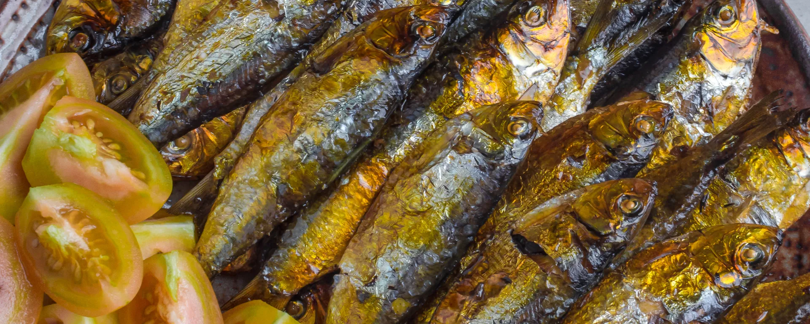

Bataan, a province in the Philippines, boasts a rich and diverse cultural heritage that has been shaped by its history, geography, and the interplay of various influences.
Cultural Heritage
Its cultural tapestry is woven from the threads of its indigenous Aeta and Sambal communities, as well as the influences brought by Spanish colonization, trade, and modernization. This diversity contributes to the province's unique identity.
The art scene includes traditional crafts such as weaving and pottery, which have been passed down through generations. Local artisans create products like baskets, mats, and ceramics using techniques rooted in ancestral knowledge.

Bataan celebrates several festivals that reflect its cultural traditions and history. The "Pawikan Festival" honors the conservation efforts for sea turtles, which are an important part of Bataan's coastal ecosystem. The "Kuraldal Festival" in Orani is a religious festival that pays tribute to the Santo Cristo de Limos.
Traditional music and dance are integral to Bataan's cultural celebrations. Folk dances like the "Pantomina" and "Sakuting" showcase the province's lively and vibrant spirit.
Nowadays, clothing may not be as prevalent in everyday life, but during cultural events and festivals, you may see people donning traditional attire that reflects Bataan's historical heritage.
The cuisine reflects a blend of influences, including indigenous flavors, Spanish influences, and local ingredients. Seafood is prominent due to the province's coastal location. Local delicacies like "Bataan Pastillas" (milk candy), "Tamales" (sticky rice cakes), and "Tinapa" (smoked fish) showcase the province's culinary heritage.
Agriculture remains a crucial aspect of Bataan's culture, with rice, coconut, and other crops being cultivated. Farming practices often have deep-rooted cultural significance, and traditional methods are still practiced in some areas.
Bataan's culture is a dynamic blend of history, tradition, and modern influences. It's a living testament to the resilience of its people and their ability to adapt while staying rooted in their heritage.